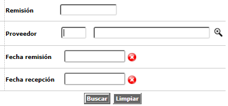
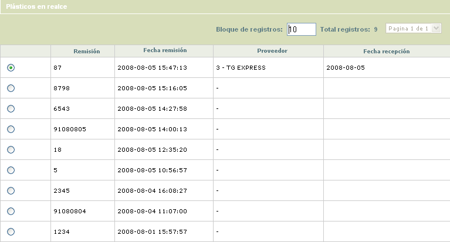
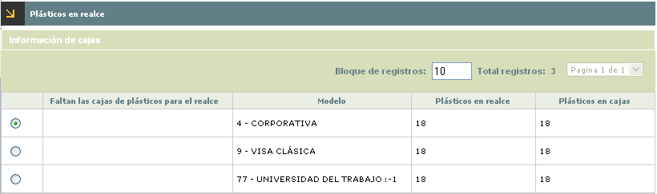
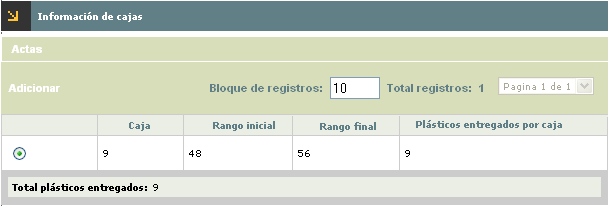
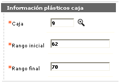
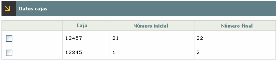
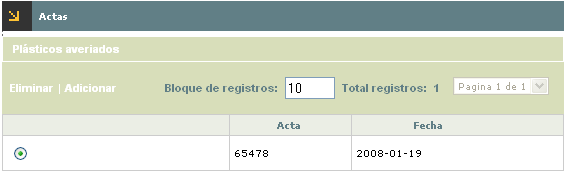
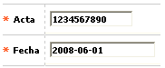
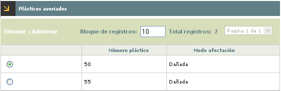
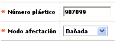

Plásticos en realce y dañados |
Mediante esta opción se registran los plásticos que han sido entregados al proveedor de realce, que se han dañado bien sea durante el proceso de realce, por condiciones de almacenamiento inadecuadas o inclusive que son dados de baja por ser obsoletos debido a cambios de imagen corporativa de la entidad, utilización de nuevos modelos, entre otras posibles causas.
Al ingresar a la opción, se muestra un filtro que le permite al usuario seleccionar los criterios por los cuales desea consultar la información.

Descripción de campos
Remisión |
Campo numérico de hasta 12 dígitos en el que se registra el número de remisión que se desea consultar. |
Proveedor |
Este campo con lista de valores se selecciona el proveedor del realce a quien corresponde la información a consultar. |
Fecha remisión |
Campo en formato YYYY-MM-DD en el que se ingresa la fecha en que se generó la remisión de realce que se desea consultar. |
Fecha recepción |
Este campo en formato YYYY-MM-DD se registra la fecha en la que se hizo el cargue de control de inventario mediante el cual el proveedor hace entrega a la entidad de los plásticos realzados. |
Por defecto, al ingresar al formulario se muestran todos los registros existentes indicando para cada uno el número de remisión, la fecha de remisión, el proveedor encargado del realce y la fecha en la que hizo la entrega de las tarjetas realzadas a la entidad.

El formulario solo contiene el hipervínculo Plásticos en realce
Plásticos en realce : si el usuario selecciona una remisión en particular e invoca el hipervínculo Plásticos en realce se despliega un nuevo formulario en el cual se muestran por modelo la relación de la cantidad de plásticos enviados a realce y la cantidad de plásticos en blanco entregados por la entidad al proveedor de realce para que éste pueda efectuar el proceso de embosado de las tarjetas.

Descripción de campos
Faltan las cajas de plásticos para el realce |
Este campo muestra una marca de advertencia cuando existe diferencia entre la cantidad de plásticos en realce y la cantidad de pláticos en cajas, puesto que deben ser iguales. |
Modelo |
Despliega el código y descripción de cada uno de los diferentes modelos de plásticos que se enviaron a realce en cada remisión. |
Plásticos en realce |
Campo que muestra la cantidad de registros de cada modelo que se enviaron a realce con la remisión correspondiente. |
Plásticos en cajas |
Este campo indica la cantidad de plásticos en blanco que la entidad ha entregado al proveedor para embosar los plásticos de cada modelo y remisión. |
El formulario contiene el hipervínculo Información de cajas.
Información de cajas: si el usuario selecciona un modelo plastico e invoca el hipervínculo Información de cajas se despliega un nuevo formulario en el cual se muestran para el modelo la relación de las diferentes cajas y consecutivos de plásticos en blanco entregados por la entidad al proveedor de realce para que éste pueda efectuar el proceso de embosado de las tarjetas.

Descripción de campos
Caja |
Este campo indica el número de cada una de las cajas de las cuales se entregaron plásticos al proveedor del realce. |
Rango inicial |
Despliega el consecutivo inicial de los plásticos pertenecientes a cada caja y que fueron entregados al proveedor de realce. |
Rango final |
Muestra el consecutivo final de los plásticos pertenecientes a cada caja y que fueron entregados al proveedor de realce. |
Plásticos entregados por caja |
Este campo indica la cantidad total de plásticos por caja que fueron entregados al proveedor de realce. |
Total plásticos entregados |
Campo que muestra el total de plásticos entregado al proveedor de realce, facilitando el control al usuario cuando existan entregas de plásticos pertenecientes a más de una caja. |
El formulario contiene la opción Adicionar y el hipevínculo Actas.
Adicionar: si el usuario invoca la opción Adicionar, se despliega un wizard de dos pasos en el cual se registran las diferentes caja y consecutivos de plásticos que van a ser entregados al proveedor de realce para el embosado de las tarjetas. En la primera página se registran y adicionan cada una de las cajas y rangos de plásticos a entregar al proveedor.

Descripción de campos
Caja |
Campo obligatorio con lista de valores del cual se selecciona la caja de la cual se van a entregar los plásticos al proveedor. |
Rango inicial |
Este campo obligatorio y no modificable, muestra automáticamente el consecutivo inmediatamente siguiente al último utilizado de la caja con el fin de garantizar que no existan rangos de plásticos no utilizados. |
Rango Final |
Campo numérico obligatorio en el que se registra el último número de plástico contenido en la caja, entregado al proveedor de realce. |
Una vez adicionados los registros, al desplazarse a la segunda página del wizard, se muestra el resumen de las diferentes cajas adicionadas y sus correspondientes rangos. Para permitir grabar el registro el sistema valida que la cantidad todal de plásticos entregados sea igual a la cantidad de plásticos remisionados para el modelo; en caso contrario no permite guardar el registro en la base. Después que las cajas han sido registradas, el sistema actualiza los campos Existencias y Realce contenidos en el formulario Inventario de plásticos.

Actas: si desde el formulario Información de cajas el usuario selecciona un registro e invoca el hipervínculo Actas, el sistema despliega un formulario en el cual se muestran las diferentes actas mediante las cuales la entidad certifica o legaliza la avería de los plásticos dañados durante el proceso de realce.

.
El formulario contiene las opciones Adicionar, Eliminar y el hipervínculo Plásticos averiados.

Descripción de campos
Acta |
Campo numérico obligatorio de hasta 10 dígitos en el que se registra el número del acta mediante la que se formaliza la avería de los plasticos dañados durante el realce. |
Fecha |
En este campo obligatorio, se ingresa en formato YYYY-MM-DD la fecha del acta respectiva. |
Plásticos averiados: si el usuario selecciona un acta e invoca el hipervínculo Plásticos averiados el sistema despliega un formulario en el cual se muestra el número de los plásticos pertenecientes a la caja y que fueron dañados durante el proceso de realce por parte del proveedor.

El formulario cuenta con las opciones Adicionar y Eliminar
Adicionar: si el usuario invoca la opción Adicionar, se despliega un nuevo formulario en el cual se registran los números de plásticos pertenecientes a la caja y que fueron formalizados como averiados mediante la respectiva acta, para lo cual el sistema controla que el plastico a registrar como averiado efectivamente pertenezca a la caja.

Descripción de campos
Número plástico |
Campo numérico obligatorio de hasta 10 dígitos en el que se registra el número del plastico perteneciente a la caja y que fue dañado durante el proceso de realce. |
Modo afectación |
En este campo tipo combo, obligatorio, el usuario puede seleccionar entre Averiado o Destruido el motivo por el cual se está dando de baja y descargando el plástico del inventario. |
Una vez registrados los plásticos averiados, el sistema actualiza los campos Realce y Dañados contenidos en el formulario Inventario de plásticos y permite que se puedan registrar para la remisión los plásticos de reemplazo que es necesario entregarle nuevamente al proveedor para efectuar el realce de las tarjetas que quedaron pendientes.